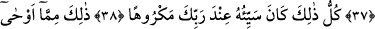
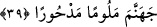

RABBİMİZİN VAHYETTİĞİ
HİKMETLER
35. Ölçtüğünüz zaman tastamam ölçün ve doğru terazi ile tartın. Bu, hem daha
iyidir hem de neticesi bakımından daha güzeldir.
36. Bilmediğin şeyin ardına düşme. Çünkü kulak, göz ve gönül, bunların hepsi
ondan sorumludur.
37. Yeryüzünde böbürlenerek yürüme. Çünkü sen (ağırlık ve azametinle) ne yeri
yarabilir ne de boyca dağlara erişebilirsin.
38. Bütün bu sayılanların kötü olanları, Rabbinin nezdinde sevimsizdir.
39. İşte bunlar, Rabbinin sana vahyettiği hikmetlerdir. Allah ile birlikte başka ilâh
edinme; sonra kınanmış ve (Allah’ın rahmetinden) uzaklaştırılmış olarak
cehenneme atılırsın.
Müşterileriniz için “ölçtüğünüz zaman tastamam ölçün” ölçüyü tam yapın, eksik
tartmayın. Âyette ölçme “ölçtüğünüz zaman” diye kayıtlanmıştır. Çünkü eksik ölçmek
müşteriye satma sırasındadır. İnsanlardan ölçerek satın alma sırasında adâletli
olmalarını emretmeye ihtiyaç yoktur. Çünkü başka bir âyette de “Onlar insanlardan bir
şey ölçüp aldıkları zaman ölçüyü tam yaparlar.” (el-Mutaffifîn, 83/2) buyrulmaktadır.
“Ve doğru terazi ile tartın.” “
el-Kıstâs = terazi, kantar demektir.” Arapça’ya
sonradan girmiş bir kelimedir. Kendisiyle küçük veya büyük her şeyin tartıldığı tartı
âletidir. Bazıları bu kelimenin aslının Rumca olduğunu, sonradan Arapça’ya girdiğini
söylemişlerdir. Ama bu, Kur’ân’ın Arapça olmasına zarar vermez. Çünkü Arapça’ya
sonradan girmiş kelimeler Arapça kelimelerin kalıbına uymaktadırlar. Bahru’l-ulûm’da
şöyle demiştir: Cumhur, bu kelimenin adâlet ve terazi anlamlarına gelen
kökünden
alınmış Arapça bir kelime olduğunu söylemişlerdir. En doğru görüş de budur.